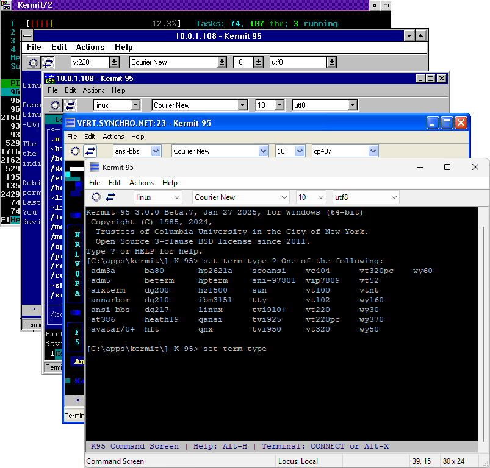

Kermit 95 is a free scriptable terminal emulator and file transfer utility for nearly all 32bit and 64bit releases of Microsoft Windows, as well as 32bit IBM OS/2. Kermit 95 is the official Windows and OS/2 port of C-Kermit from the Kermit Project
The latest stable release is: 3.0 Beta 7 (27 January 2025). Download it here.
If you're upgrading from a Kermit 95 v2.1.3 or earlier, you may want to check What's New in Kermit 95 v3.0. If you're upgrading from a previous Kermit 95 v3.0 beta release, then the K95 3.0 beta change log will tell you what's changed since the version you're currently running.
† Secure communication methods (SSH, Telnet-ssl, ftps, https, Kerberos) require Windows XP SP3 or newer.
* REXX scripting currently requires Windows XP SP3 or newer and an x86 or x86-64 CPU, or IBM OS/2. The next release will include REXX support on more Windows releases and CPU architectures.
Three versions of the Kermit 95 manual are currently available online in addition to being packaged with Kermit 95:
The Kermit 95 manual primarily covers details unique to Kermit 95 such as its terminal emulator and SSH client. For information on its command interface, telnet client and other aspects it shares with C-Kermit, see The C-Kermit Documentation
For information on the control sequences supported by Kermit 95, see the draft Kermit 95 Control Sequences document. Note that this document covers the next release of K95, not the current one! If you need to know what control sequences are supported in beta 7, you can find a copy of this file in your DOCS folder.
If you run into any trouble with Kermit 95 or need help with something, you can ask a question on GitHub Discussions. If you don't have a GitHub account, or would rather not ask a question in public space, you can also email ckw@kermitproject.org.
There is also a Kermit 95 How-To which may be useful for new users, and the Kermit 95 FAQ (not updated for v3.0 yet, but still relevant)
If you think you may have found a bug, you can check the K95 Bugs List or the Issue Tracker on GitHub to see if your bug is described anywhere. If it isn't, feel free to log it on the issue tracker or if you're not sure get in touch via one of the above methods. Bugs that aren't reported aren't likely to get fixed anytime soon!
While recent Kermit 95 releases have carried the "beta" label, they have in practice been stable feature releases. They continue to carry the beta label only because:
Because the last "stable" release was in 2003 and isn't freely available (or particularly usable in 2025 due to changing encryption algorithms), Kermit 95 is currently in a kind of perpetual beta development stage. If the latest release meets you needs it isn't worth waiting for the beta tag to disappear - the latest beta releases are already more stable last stable commercial release, and the beta tag may still be around for another year or three depending on how much free time the projects single developer has.

The "Dialer" as included in Kermit 95 2.1.3 and earlier is still included with Kermit 95 v3.0 where possible, but it should now be considered a deprecated feature. It's not going to go away, but its also not going to get much in the way of enhancements or new features. It's there if you need it, but you're better off writing scripts or macros to save connection details (see the K95 How-To for an example macro).
The dialer is trapped in the 90s by the frameworks it was built with, so it is not possible to build it for x86-64, Itanium, ARM32 or ARM64. As a result it's not included with the Itanium, ARM32 or ARM64 versions of Kermit 95.
A new replacement will be developed eventually (it is in fact already more than half built), but this likely won't appear until some release after K95 v3.0. When it does appear, the dialer will receive one final upgrade to support exporting its connections to a format its replacement can understand.
And these pages from the Wiki may be useful:
If you'd like to keep an eye on development progress, a log of sorts is available.